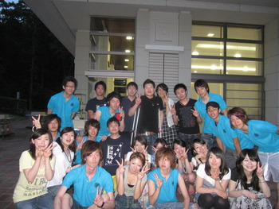

2009年07月27日
どこにいても、何をしてても駆けつけてあげるから・・・
おっす！！オラ梧空！！みんな暑さにやられってねっかー？？
さてさて、連続アップです！！最近ゲリラ豪雨も多いんでね！
気をつけてね～昔なんて夏の暑い日は夕立が降って涼しくなったのをよく覚えてますが、最近は異常気象やら温暖化で夕立が降らなくなったな～とおもってたらゲリラ豪雨みたいになっていやですね～奥さん

さてさて、本題に戻ります！ゼミの３回生とリトリートで合宿をしたんですが、個人的な感想としては非常に良かったですな～
熱い熱い、チームワークのいい３回生を見ていていろんな刺激を受けました！
そもそも、大学に入るとサークルにでも入らないと上下のつながりってなかなか出来ないですよね～
今時上下関係とかウゼーよ！！って人も世の中には多いかもしれませんが、昔ながらの体育会的なノリとか上下のつながりって面倒なこともあるかもしれないですが、いい面も沢山あるんじゃないかと筆者は日々感じております！！
もちろん、単なるパシリとかはなしにね

そういう上下がつながる機会が多いゼミに入れたのはえかったな～ということです！！
そして夜はふけてゆくのであった・・・・
この記事へのトラックバックURL
http://ohtasemi3ki.kyo2.jp/t123479
※このエントリーではブログ管理者の設定により、ブログ管理者に承認されるまでコメントは反映されません
|
上の画像に書かれている文字を入力して下さい | |